> with(DEtools):
> DEplot(diff(v(t),t)=9.8-v(t)/5,v(t),t=0..10,[[v(0)=40],[v(0)=55],[v(0)=30],[v(0)=65],[v(0)=49]],arrows=none);
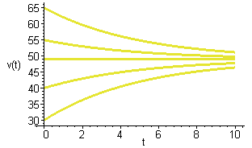
The above graph is to do with the now familiar falling body problem. It plots solutions corresponding to various initial values. You may want to compare it with the picture on page 13 of your book. I suggest that you 'tweak' the above command to find the graph of a single solution. The following is a plot in relation with problem 1 part (a) on page 14.
> DEplot(diff(y(t),t)=5-y(t),y(t),t=0..5,[[y(0)=0],[y(0)=10],[y(0)=7],[y(0)=5],[y(0)=4],[y(0)=-1]], arrows=none);
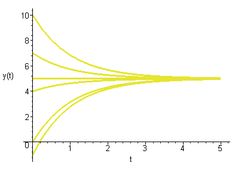
Just to give you the idea that not all differential equations have solutions involving exponentials.
> DEplot(diff(y(t),t)=5-t,y(t),t=0..12,[[y(0)=0],[y(0)=10],[y(0)=7],[y(0)=4],[y(0)=-1]], arrows=none);
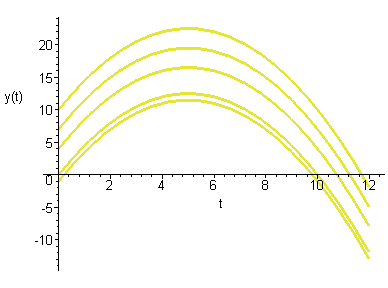
If you have not done that yet, note now that the above example is a matter of simple integration. However if you are after simple integration such as 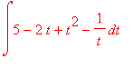 you can directly do that as follows:
> int((5-2*t+t^2-1/t),t);
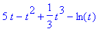
Notice that int(5-2*t+t^2-1/t,t); gives you the integral of the function f(t)=5-2t+t^2-1/t, with respect to t without the constant of integration. Note also that to indicate multiplication you write a*b and not ab and for powers you do the same as you do with the calculators. Also for a divided by b you write a/b as you do with the calculators. Now let us try something harder.
> int(sqrt(9-x^2),x);
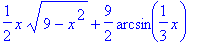
Does that remind you of something? Note also that the software takes 'sqrt' for the square root sign. This much about the indefinite integrals. (You can explore the glossary part of the help to find other ways of finding indefinite integrals. At end of the help session on a command, there are given some examples, pick an example that is closest to what you want to do copy it and tweak is so that it become the command that you want.) For the definite integral of say 5-2*t+t^2-1/t,with respect to t from t=1 to t=5 you write:
> int(5-2*t+t^2-1/t,t=1..5);
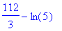
Now you want a number in decimal notation. To arrange that you may use the 'evalf' function:
> evalf(int(5-2*t+t^2-1/t,t=1..5));
> int(cos(x),x=0..Pi);
Note that for most of the functions such as the trig functions, you are supposed to write say sin(x) for sin x.
> int(abs(cos(3*x)),x=0..Pi/2);
Of course 'abs' indicates the absolute value function. Note the brackets. Now let us suppose that you want to evaluate 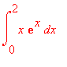 . Noting that 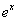 is accepted as exp(x) we write the command as:
> int(x*exp(x),x=0..2);
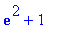
Now if you want the value in decimal notation you know exactly what to do. Next, it is a cruel world and you know that not all continuous functions have antiderivatives. So let us find out what Maple would do with such a function. Let us try to find the integral 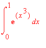 the Maple command for it is:
> int(exp(x^3),x=0..1);
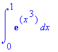
It spits out the same integral we gave it in its own 'tongue'! This means that Maple could not do it; because there is no known formula for the antiderivative. But thanks to various numerical integration techniques we can approximate value of this integral by using 'evalf'.
> evalf(int(exp(x^3),x=0..1));
Sometimes Maple does come up with an 'answer' but say we dont know how to handle it or we do not care about it. For example let us find 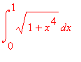
> int(sqrt(1+x^4),x = 0 .. 1);
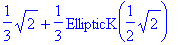
This what I meant, we went asking integrals we got back something that we would take a long time learning about. Bad deal, let us try evalf
> evalf(int(sqrt(1+x^4),x = 0 .. 1));
>